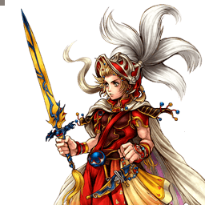

Final Fantasy III
Onion Knight
Rushdown mêlée ultra-mobile dont chaque bravery débouche sur un HP link
Vue d'ensemble
Onion Knight est un personnage de close-range doté d'une mobilité remarquable, de bravery attacks mêlée très rapides et de quelques attaques à distance pour punir un jeu défensif négligent. Son trait le plus marquant est l'abondance de HP links : toutes ses bravery attacks peuvent se prolonger en HP attack, ce qui rend son damage output en HP très constant et autorise du burst damage avec des builds à base bravery élevée dès que l'assist est disponible.
C'est un personnage agile sur tous les plans, avec parmi les meilleures vitesses de course et de dash du jeu. Il peut poursuivre les personnages fuyards comme Kefka et les punir sur air dodge, sécuriser systématiquement les EX Cores pour priver l'adversaire d'EX, et même esquiver des attaques en courant, ce qui complique la tâche de personnages au bon tracking comme Firion ou Squall. Sa vitesse de chute après un dodge le rend en outre difficile à toucher après un air dodge.
Les styles de build EX et assist fonctionnent tous deux, l'assist prenant l'avantage en constance et en dégâts grâce à la base bravery élevée et à Side by Side. La génération d'EX, bien que correcte, reste en retrait car concentrée dans les HP attacks et les enders bravery magiques. Sa défense de base au-dessus de la moyenne (111) lui permet par ailleurs d'investir dans la base bravery et les HP avec moins de risque.
Ces qualités ont des contreparties : ses braveries mêlée, unreactable au startup et actives longtemps, l'exposent fortement au whiff punish, surtout face aux attaques à meilleure priorité ou tracking. Ses projectiles sont trop lents pour occuper l'espace et servent surtout de punishers. Générer de la jauge d'assist en whiffant est difficile, et avec ses animations statiques et un seul HP Melee High rapide (au sol uniquement), il peine face aux projectiles persistants et aux pièges. Ultimecia et The Emperor peuvent ainsi faire pencher durablement le ratio risque/récompense en leur faveur.
Tier list 2017 (tournoi, dissidia.wiki) : B — 15ᵉ sur 30. Classé 15e, en tier B, dans la tier list 2017. Historiquement placé en haut ou milieu de classement : son plan de jeu direct, sa facilité de prise en main et sa constance en font un choix confortable à beaucoup de niveaux de jeu.
Forces
- Menace redoutable en close-range : toutes les braveries, dont des attaques mêlée éclair, se prolongent en HP attack pour un damage output constant.
- Synergie Side by Side : en HP linker dédié, il maximise le gain de jauge d'assist de l'accessoire et fiabilise les builds à base bravery élevée.
- Mobilité : course rapide, dash très rapide et chute rapide après air dodge pour approcher, punir les dodges, prendre les EX Cores et esquiver.
- Whiff punishment : toutes ses bravery attacks conviennent pour punir des coups manqués à différentes distances.
- HP links relativement sûrs : même en cas d'Assist Change adverse avec la capacité Precision Evasion équipée, il reste difficile à punir.
- Reset sûr du decay de la jauge d'assist grâce aux braveries Strength Booster et Magic Booster, sans grande prise de risque.
- Dégâts bravery en EX Mode : multiplicateurs fortement augmentés sur tout le kit, de quoi broyer la bravery adverse.
Faiblesses
- Whiffs très engageants : les braveries mêlée manquées ont une longue durée et exposent au whiff punishment.
- Génération de jauge d'assist sur whiff laborieuse hors Side by Side et accessoires EXP to Assist / EXP.
- Combat à distance faible : braveries Ranged Low et HP Ranged High mal adaptés pour occuper l'écran, et vulnérables au whiff punish par assist.
- Manque d'outils contre les pièges : seul HP Melee High rapide au sol et projectiles HP aériens lents ; Cyclone de Garland ou Flare et Thunder Crest de The Emperor sont très difficiles à franchir sans risque.
- Damage output bravery relativement bas : plus faible ATK de base du jeu et dépendance aux HP links.
Stats & vitesses
| Nom | Onion Knight (オニオンナイト) |
|---|---|
| Jeu d'origine | Final Fantasy III |
| ATK de base (LV100) | 107 (Lowest) |
| DEF de base (LV100) | 111 (Average) |
| Vitesse de course | 2.5 (Fast) |
| Vitesse de dash | 69 (Very Fast) |
| Vitesse de chute | 85 (Average) |
| Chute après esquive | 14 (Very Fast) |
| BRV la plus rapide | 11F (Multi-Hit) |
| HP la plus rapide | 41F (Blade Torrent, Windshear) |
| HP en 1 coup | Yes (Firaga) |
| HP links | Yes |
| Command block | No |
| Armes | Daggers, Parrying Weapons, Rods,Staves, Swords, Thrown Weapons |
| Armures | Bangles, Chestplates, Clothing, Gauntlets,Hats, Hairpins, Headbands, Light Armor |
| Armes exclusives | Tyrfing, Royal Sword, Onion Sword |
| Unlock | Default |
| Camp | Cosmos |
| Doubleur (JP) | Jun Fukyama |
| Doubleur (ENG) | Aaron Spann |
Valeurs brutes du wiki (page personnage) — plus la valeur est basse, plus le personnage est rapide. Trait pointillé or : moyenne des 31 personnages.
Coups
Startup en frames (60 i/s, données dissidia.wiki). Couleur : Melee Low · Melee Mid · Melee High · Ranged.
Braveries
Au sol
Most bravery attacks have separate, higher damage multipliers during EX mode. These multipliers are highlighted in bold.
Multi-Hit Melee Low
[Close] Déluge de coups au sol, faible mais très rapide à sortir (11F). Se prolonge en Extra Slice (bravery) ou en Swordshower (HP link).
| Dégâts de base | 1 x 7, 2 (9+) / 1 x 15, 2 (17+) |
|---|---|
| Startup | 11F |
| Type | Physical |
| Priorité | Melee Low |
| EX Force | 21 |
| Cancels | Dodge |
| CP (maîtrisé) | 20 (10) |
Extra Slice Melee Low
Branche de Multi-Hit : entaille supplémentaire avec Wall Rush.
| Dégâts de base | 3 x 7, 10 (+31) / 5 x 3 (59+) |
|---|---|
| Startup | ?? |
| Type | Physical |
| Priorité | Melee Low |
| EX Force | 21 |
| Effets | Wall Rush |
| Cancels | Dodge |
| CP (maîtrisé) | 10 (5) |
Blizzard Ranged Low
[Long] Projectiles de givre au sol, hauteur limitée mais grande vitesse. Se prolonge en Blizzaga (bravery) ou en Quake (HP link).
| Dégâts de base | 4 x 3 (12+) / 5 x 3 (15+) |
|---|---|
| Startup | 35F |
| Type | Magical |
| Priorité | Ranged Low |
| EX Force | 12 |
| Cancels | Dodge |
| CP (maîtrisé) | 20 (10) |
Blizzaga Ranged Low
Branche de Blizzard : fait tomber des éclats de glace, avec effet Chase et un gros gain d'EX Force (78).
| Dégâts de base | 7, 7, 18 (+32) / 10 x 4, 18 (+58) |
|---|---|
| Startup | ?? |
| Type | Magical |
| Priorité | Ranged Low |
| EX Force | 78 |
| Effets | Chase |
| Cancels | Dodge |
| CP (maîtrisé) | 10 (5) |
Strength Booster (ground) -
Buff temporaire (40F d'incantation, annulable en attaque/dodge/block après 20F) : dégâts et défense physiques +10 %, taux de critique +5 % pendant 10 secondes (600F). Sert aussi à entretenir la jauge d'assist en sécurité.
| Startup | 40F (casting) |
|---|---|
| EX Force | 0 |
| Effets | Physical DMG +10 %, Physical DEF +10 %, Crit Rate +5 % |
| Cancels | Dodge, Block, Attack (after 20F) |
| CP (maîtrisé) | 30 (15) |
Magic Booster (ground) -
Buff temporaire (40F d'incantation, annulable après 20F) : dégâts et défense magiques +10 %, taux de critique +5 % pendant 10 secondes (600F). Même rôle d'entretien sûr de la jauge d'assist.
| Startup | 40F (casting) |
|---|---|
| EX Force | 0 |
| Effets | Magical DMG +10 %, Magical DEF +10 %, Crit Rate +5 % |
| Cancels | Dodge, Block, Attack (after 20F) |
| CP (maîtrisé) | 30 (15) |
En l’air
Turbo-Hit Melee Low
[Close] Taillade aérienne à haute vitesse (13F, 11F en EX Mode), faible mais efficace à toute hauteur. Se prolonge en Extra Lunge (bravery) ou en Guiding Swipe (HP link).
| Dégâts de base | 1 x 7, 2 (9+) / 1 x 15, 2 (17+) |
|---|---|
| Startup | 13F / 11F (EX Mode) |
| Type | Physical |
| Priorité | Melee Low |
| EX Force | 21 |
| Cancels | Dodge |
| CP (maîtrisé) | 20 (10) |
Extra Lunge Melee Low
Branche de Turbo-Hit : fentes supplémentaires avec Wall Rush.
| Dégâts de base | 3 x 7, 10 (+31) / 3 x 15, 14 (+59) |
|---|---|
| Startup | ?? |
| Type | Physical |
| Priorité | Melee Low |
| EX Force | 21 |
| Effets | Wall Rush |
| Cancels | Dodge |
| CP (maîtrisé) | 10 (5) |
Thunder Ranged Low
[Long] Trio de boules de foudre qui courbent leur trajectoire pour traquer l'adversaire, efficace à toute hauteur. Se prolonge en Thundaga (bravery) ou en Flare (HP link).
| Dégâts de base | each (3) / each (4) |
|---|---|
| Startup | 31F |
| Type | Magical |
| Priorité | Ranged Low |
| EX Force | each 3 |
| Cancels | Dodge |
| CP (maîtrisé) | 20 (10) |
Thundaga ??
Branche de Thunder : deux éclairs avec effet Chase et 78 d'EX Force.
| Dégâts de base | 13, 18 (+31) / 11x2, 17x2 (+56) |
|---|---|
| Startup | ?? |
| Type | Magical |
| Priorité | ?? |
| EX Force | 78 |
| Effets | Chase |
| Cancels | Dodge |
| CP (maîtrisé) | 10 (5) |
Strength Booster (midair) -
Version aérienne du buff physique : mêmes effets (+10 % dégâts/défense physiques, +5 % critique, 600F).
| Startup | 40F (casting) |
|---|---|
| EX Force | 0 |
| Effets | Physical DMG +10 %, Physical DEF +10 %, Crit Rate +5 % |
| Cancels | Dodge, Block, Attack (after 20F) |
| CP (maîtrisé) | 30 (15) |
Magic Booster (midair) -
Version aérienne du buff magique : mêmes effets (+10 % dégâts/défense magiques, +5 % critique, 600F), annulable en attaque/dodge/block à 20F.
| Startup | 40F (casting) |
|---|---|
| EX Force | 0 |
| Effets | Magical DMG +10 %, Magical DEF +10 %, Crit Rate +5 % |
| Cancels | Dodge, Block, Attack (after 20F) |
| CP (maîtrisé) | 30 (15) |
Attaques HP
Au sol
Most HP attacks have separate, higher damage multipliers during EX mode. These multipliers are highlighted in bold.
Blade Torrent Melee High
[Close] Entaille ultra-rapide : HP le plus rapide du kit (41F, 39F en EX Mode), utilisable aussi en l'air, avec Wall Rush.
| Dégâts de base | 1x15 (15) / 1x31 (31) |
|---|---|
| Startup | 41F / 39F (EX mode) |
| Type | Physical |
| Priorité | Melee High |
| EX Force | 45 |
| Effets | Wall Rush |
| Cancels | Dodge |
| CP (maîtrisé) | 30 (15) |
Firaga Ranged High
[Long] Boules de feu avec large explosion à l'impact ; c'est le HP en un coup (1-hit) du personnage.
| Dégâts de base | -- |
|---|---|
| Startup | 43F |
| Type | -- |
| Priorité | Ranged High |
| EX Force | 60 |
| Effets | -- |
| Cancels | Dodge |
| CP (maîtrisé) | 30 (15) |
Swordshower ??
Branche de Multi-Hit : pluie de lames de lumière avec Wall Rush, le HP link du jeu au sol.
| Dégâts de base | 1x15 (+15) / 1x31 (+31) |
|---|---|
| Startup | ?? |
| Type | Physical |
| Priorité | ?? |
| EX Force | 45 |
| Effets | Wall Rush |
| Cancels | Dodge |
| CP (maîtrisé) | 30 (15) |
Quake ??
Branche de Blizzard : séisme magique, 81 d'EX Force.
| Dégâts de base | 2x7 (+14) / 4x7 (+28) |
|---|---|
| Startup | ?? |
| Type | Magical |
| Priorité | ?? |
| EX Force | 81 |
| Effets | -- |
| Cancels | Dodge |
| CP (maîtrisé) | 30 (15) |
En l’air
Wind Shear Melee High
[Close] Toupie à grande vitesse dirigeable au stick (41F), avec effets Absorb et Wall Rush.
| Dégâts de base | 1x15 (15) / 1x31 (31) |
|---|---|
| Startup | 41F |
| Type | Physical |
| Priorité | Melee High |
| EX Force | 45 |
| Effets | Absorb, Wall Rush |
| Cancels | Dodge |
| CP (maîtrisé) | 30 (15) |
Comet Ranged High
[Long] Petits météores à viser au stick : lent (81F) mais très généreux en EX Force (105).
| Dégâts de base | 1x15 (15) / 1x31 (31) |
|---|---|
| Startup | 81F |
| Type | Magical |
| Priorité | Ranged High |
| EX Force | 105 |
| Effets | -- |
| Cancels | Dodge |
| CP (maîtrisé) | 30 (15) |
Guiding Swipe ??
Branche de Turbo-Hit : lames de lumière rapides.
| Dégâts de base | 1x15 (+15) / 1x31 (+31) |
|---|---|
| Startup | ?? |
| Type | Physical |
| Priorité | ?? |
| EX Force | 45 |
| Cancels | Dodge |
| CP (maîtrisé) | 30 (15) |
Flare ??
Branche de Thunder : énormes explosions, 96 d'EX Force.
| Dégâts de base | 1x12 (+12) / 2x12 (+24) |
|---|---|
| Startup | ?? |
| Type | Magical |
| Priorité | ?? |
| EX Force | 96 |
| Effets | -- |
| Cancels | Dodge |
| CP (maîtrisé) | 30 (15) |
EX Mode: Job Change! & EX Burst
EX Mode « Job Change! » : Regen, Critical Boost, Dual Wield et Sage's Wisdom. Dual Wield change le job en Ninja lors d'une attaque physique : les attaques deviennent plus rapides que l'œil et arrachent davantage de bravery. Sage's Wisdom change le job en Sage lors d'une attaque magique et libère un pouvoir mystique scellé qui renforce les sorts.
Concrètement, la plupart des bravery et HP attacks disposent de multiplicateurs de dégâts supérieurs en EX Mode (valeurs distinctes dans les tables de coups), ce qui augmente fortement le damage output bravery sur l'ensemble du kit.
EX Burst : Deux EX Bursts selon le job : Ninjutsu (sélectionner « Shuriken » dans le menu, ender physique, 100 de dégâts de base au total) et Spellbook (sélectionner « Holy », ender magique, 100 de base au total).
Mécanique unique
Plan de jeu & techniques avancées
La boucle de jeu repose sur la mobilité et la menace de HP link permanente : approchez ou attendez la faute grâce à la vitesse de course et de dash, collez des braveries mêlée unreactable au startup (Multi-Hit au sol, Turbo-Hit en l'air), et convertissez chaque touche en HP attack. Les projectiles (Blizzard, Thunder, Firaga, Comet) ne servent pas à occuper l'espace : réservez-les à la punition d'un jeu défensif négligent.
Côté ressources, la génération de jauge repose surtout sur le spot dashing, les hits HP et les EX Cores, mais l'entretien des ressources est facile : utilisez Strength Booster ou Magic Booster pour reset le decay de la jauge d'assist sans grande prise de risque. Le build assist (base bravery élevée + Side by Side) offre la meilleure constance et le meilleur damage output ; investir dans l'EX reste viable si nécessaire, même si la génération d'EX est concentrée en fin de combo.
Utilisez la mobilité défensivement : poursuivez les fuyards, sécurisez les EX Cores pour priver l'adversaire d'EX, esquivez en courant et profitez de la chute rapide après air dodge. Attention en revanche aux whiffs : vos braveries manquées durent longtemps, et les projectiles persistants ou pièges (Ultimecia, The Emperor) faussent votre ratio risque/récompense — vous avez très peu de moyens de les contourner en sécurité une fois qu'ils sont posés.
Techniques spécifiques
Assist decay reset
Incanter Strength Booster ou Magic Booster permet de réinitialiser le decay de la jauge d'assist sans s'exposer : un moyen sûr d'entretenir la ressource, là où whiffer des braveries serait dangereux.
Techniques universelles (blodge, dash feint, lock off, dodge punishment) : voir la page Techniques & glitches.
Matchups
D'après l'overview : Onion Knight punit efficacement les personnages fuyards comme Kefka (poursuite et punition des air dodges) et sa vitesse de course complique la tâche même de personnages au bon tracking comme Firion et Squall. Il tient tête à une bonne partie du roster, notamment Warrior of Light, Golbez et Zidane.
À l'inverse, les personnages à projectiles persistants et pièges — Ultimecia et The Emperor en tête (Flare, Thunder Crest), ainsi que le Cyclone de Garland — faussent durablement son ratio risque/récompense : sans HP Melee High rapide en l'air, il a très peu d'options sûres pour franchir ces zones une fois posées.
Vidéos de matchs : Replay Theater — matchs de Onion Knight.
Builds
Deux builds sont documentés sous forme de tables d'équipement, tous deux avec l'assist Sephiroth et l'invocation Rubicante, en supposant l'Equip Glitch pour le coût en CP. Le premier est un build Side by Side (extra ability Best Dresser) : base bravery très élevée (1683 BRV, 10478 HP) avec Piggy's Stick, Aegis Shield, Thornlet, Maximillian et une batterie d'accessoires dont Hero's Essence, Together as One et Side by Side.
Le second est un build EX Core (extra ability Master Protector pour une base BRV plus haute) : set Genji + Onion Sword (effet spécial Soul of Yamato) et accessoires boosters conditionnels (EX Core Present, Pre-EX Mode, Pre-EX Revenge, etc.) pour un Max Booster de x13.4.
L'overview cadre la philosophie : les deux styles (EX et assist) fonctionnent, l'assist étant devant en constance et en dégâts grâce à la base bravery élevée et Side by Side, tandis que la DEF de base au-dessus de la moyenne (111) permet d'investir dans la base bravery et les HP avec moins de risque.
| Stats | |
|---|---|
| HP | 10478 |
| CP | 480 |
| BRV | 1683 |
| ATK | 173 |
| DEF | 183 |
| LUK | 61 |
| Max Booster |
| Equipment | |
|---|---|
| Assist | Sephiroth |
| Weapon <img></img> | Piggy's Stick <img></img> |
| Hand <img></img> | Aegis Shield <img></img> |
| Head <img></img> | Thornlet |
| Body <img></img> | Maximillian |
| Accessory 1 | <img></img> Dismay Shock |
| Accessory 2 | <img></img> Battle Hammer |
| Accessory 3 | <img></img> BRV = 0 |
| Accessory 4 | <img></img> Blue Gem |
| Accessory 5 | <img></img> Hero's Essence |
| Accessory 6 | <img></img> First to Victory |
| Accessory 7 | <img></img> Hero's Seal |
| Accessory 8 | <img></img> Miracle Shoes |
| Accessory 9 | <img></img> Together as One |
| Accessory 10 | <img></img> Side by Side |
| Summon <img></img> | Rubicante |
| Bravery attacks | |
|---|---|
| Ground | Aerial |
| HP attacks | |
| Ground | Aerial |
| Stats | |
|---|---|
| HP | 10299 |
| CP | 450 |
| BRV | 1096 |
| ATK | 175 |
| DEF | 185 |
| LUK | 63 |
| Max Booster | x13.4 |
| Equipment | |
|---|---|
| Assist | Sephiroth |
| Weapon <img></img> | Onion Sword |
| Hand <img></img> | Genji Shield <img></img> |
| Head <img></img> | Genji Helm <img></img> |
| Body <img></img> | Genji Armor <img></img> |
| Accessory 1 | <img></img> Dragonfly Orb |
| Accessory 2 | <img></img> Dismay Shock |
| Accessory 3 | <img></img> Large Gap in HP |
| Accessory 4 | <img></img> BRV > Base Value |
| Accessory 5 | <img></img> EX Core Present |
| Accessory 6 | <img></img> Summon Unused |
| Accessory 7 | <img></img> Pre-EX Mode |
| Accessory 8 | <img></img> Pre-EX Revenge |
| Accessory 9 | <img></img> Aerial |
| Accessory 10 | <img></img> Opponent Summon Unused |
| Summon <img></img> | Rubicante |
| Bravery attacks | |
|---|---|
| Ground | Aerial |
| HP attacks | |
| Ground | Aerial |
Les builds ne sont fournis que sous forme de tables de stats et d'équipement, sans justification rédigée pièce par pièce.
Synergies d'assist
Onion Knight en tant qu'assist
Onion Knight est classé High dans la tier list assist (Muggshotter) et le wiki le décrit comme l'un des assists les plus forts en jeu compétitif : pas strictement supérieur à Kuja ou Jecht assist, mais son utilité se démarque dans d'autres domaines.
Blizzard (BRV sol, 35F) est un combo à priorité Ranged qui n'est pas staggered par le LV2 Assist Change : bon pour les combos Wall Rush au sol et pour interrompre à distance un adversaire au sol, mais trop lent au startup pour punir les dodges. Turbo-Hit (BRV air, 13F) est un combo mêlée rapide qui pousse vers le mur, tient assez longtemps pour des combo fillers aux plafonds et corners, et permet des Chase conversions ; son défaut est la dépendance au wall rush (knockback assez faible), et un Turbo-Hit raté expose fortement à l'Assist Lock.
Blade Torrent (HP sol, 41F) est l'un des rares HP assists au sol capables de couvrir à peu près les quatre grands angles de ground dodge : de quoi conclure un match sur un bon read. Comet (HP air, 81F) excelle pour les checkmates : longue durée, longue portée, nombreux hits et priorité Ranged immunisée aux staggers du LV2 Assist Change, avec un déplacement vers l'adversaire qui facilite les setups via Chase.
Assists recommandées
- Sephiroth — C'est l'assist retenu dans les deux builds documentés du wiki ; la section Synergies précise par ailleurs qu'Onion Knight fonctionne bien avec la plupart des assists viables en tournoi.
Tech communautaire
Sources
- https://dissidia.wiki/Onion_Knight_(Dissidia_012)
- https://dissidia.wiki/Tier_List_(Dissidia_012)
- https://dissidia.wiki/Tier_List_(Assist)
Limites connues
- La page Matchups du wiki est une ébauche (stub) : aucune analyse détaillée par matchup, seules les mentions de l'overview sont exploitables.
- La section Combos est vide (non documentée) : aucune route de combo chiffrée n'est disponible.
- Aucune mécanique unique n'est documentée pour ce personnage (section absente du wiki).
- Le gain de jauge d'assist par coup n'est pas renseigné (colonnes vides) et plusieurs startups de coups de branche sont notés « ?? ».
- Les builds sont donnés uniquement en tables d'équipement, sans texte explicatif détaillé.
- La section References est vide : aucune tech communautaire attribuable ou datée.